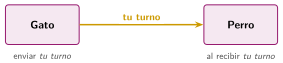

Mensajes y escenas en Scratch
🤔 Pienso5 min
Qué hago aquí: Piensa un momento y contesta con lo que ya sabes. No pasa nada si no lo sabes: es para empezar.
En una obra de teatro, ¿cómo sabe un actor que le toca hablar?
📖 Leo y aprendo15 min
Qué hago aquí: Lee despacio, mira los dibujos y los ejemplos, y quédate con la idea clave del final.
En Scratch, los objetos se avisan con mensajes. Un objeto envía el mensaje. Los que lo reciben empiezan su programa.

✏️ Hago25 min
Qué hago aquí: Haz las actividades en orden. Empieza siempre por las básicas.
Monta el ejemplo con dos fondos. Marca cuando funcione:
Completa: el bloque avisa a los demás objetos. El bloque empieza un programa cuando llega el aviso.
Añade un segundo personaje que conteste al gato cuando reciba el mensaje tu turno.
Haz una historia de tres escenas. Cada escena empieza con un mensaje.
✏️ Puedes responder escribiendo, con un dibujo o un esquema, o contándolo en voz alta.
🚀 Amplío (si quieres saber más)
Qué hago aquí: ¿Has terminado? Lee la curiosidad o elige el reto. Es voluntario.
Haz un menú con dos objetos-botón: «Jugar» y «Ayuda». Al hacer clic en cada uno, se envía un mensaje que cambia de fondo y esconde los botones.
✅ Compruebo5 min
Qué hago aquí: Contesta sin mirar la ficha y marca cómo lo llevas.